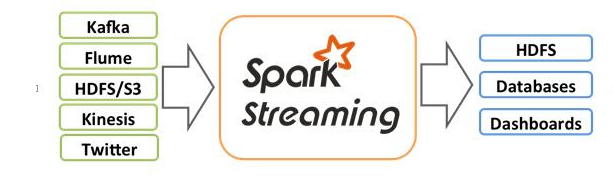

该课程适合想学kafka，Spark实时流计算，Spark机器学习的同学，该课程对于学好Kafka，及其整个架构实现原理，熟练运用Spark机器学习，熟练掌控Spark与Kafka结合，实现实时流计算。

链接详情：http://www.xuetuwuyou.com/course/147
1. 课程介绍
1、基于知名手机厂商线上项目需求进行讲解，快速提升Spark项目经验，解决手机应用实时分析、实时查询需求。
2、涵盖大数据实时计算一体化的处理流程，包括Flume采集不同来源不同类型的日志（用户行为日志，Nginx日志等等），Kafka消息队列缓存数据并提供高并发的处理以及供后续多种系统消费数据，spark-streaming根据业务需求实时计算数据，Hbase用来存储大数据量和低延迟的访问。
3、特别注重企业级Spark项目开发的系统性、完整性，拒绝小demo小案例，提升视野与高度。
2. 课程视频及源码获取联系方式
收集整理了人工智能和大数据方面的项目实战类的视频教程，需要视频请加微信（BigDataAI007） 如本站没有您想要的视频，请微信联系，可以帮您拿到课程。
2.1 项目总体介绍和背景
一、课程使用到的软件及版本
①Spark1.6.2
②kafka0.8.2.1
③centos6.5
二、课程适合人群
适合想学kafka，Spark实时流计算，Spark机器学习的学员
三、课程目标
①学好Kafka，及其整个架构实现原理
②熟练运用Spark机器学习
③熟练掌控Spark与Kafka结合，实现实时流计算
四、课程目录
第1课、spark与kafka的介绍
第2课、spark的集群安装
第3课、Spark RDD函数讲解与实战分析
第4课、Spark 的java操作实现简单程序
第5课、SparkRDD原理详细剖析
第6课、Spark 机器学习，API阅读
第7课、Kafka架构介绍以及集群安装
第8课、Kafka生产者Producer的实战
第9课、Kafka消费者Consumer剖析与实战
第10课、Kafka复杂消费者的详细讲解
第11课、Kafka数据安全，以及Spark Kafka Streaming API
第12课、Spark+Kafka+Mysql整合
第13课、Spark 机器学习ALS设计
第14课、Spark ALS协同过滤java实战
第15课、Spark ALS给用户推荐产品
第16课、Spark机器学习后存储到Mysql
第17课、Spark读取Kafka流构建Als模型
第18课、Spark处理Kafka流构建Als模型
第19课、Spark处理Kafka流实现实时推荐算法
第20课、Spark学习经验总结，spark2与spark1的区别，下期预告